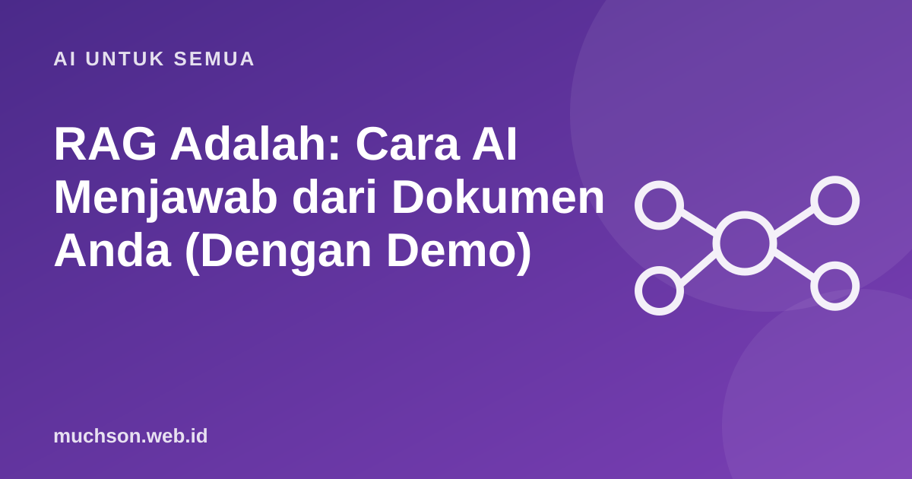

Beranda › Artikel › AI untuk Semua
AI untuk SemuaRAG Adalah: Cara AI Menjawab dari Dokumen Anda (Dengan Demo)
ChatGPT dan asisten AI lain terdengar meyakinkan, tetapi mereka tidak tahu isi dokumen internal Anda, dan kadang mengarang jawaban dengan percaya diri. RAG adalah cara paling umum untuk memperbaikinya. Di artikel ini Anda tidak hanya membaca penjelasannya, tetapi juga mencoba sendiri setiap tahapnya.

Masalah yang diselesaikan RAG
Model bahasa (LLM) dilatih dari data yang dikumpulkan sampai waktu tertentu. Ia tidak tahu kebijakan sekolah Anda, daftar harga terbaru toko Anda, atau isi PDF yang baru Anda terima kemarin. Kalau ditanya, ia punya dua kemungkinan: mengaku tidak tahu, atau mengarang jawaban yang terdengar benar. Yang kedua ini disebut halusinasi, dan itu risiko nyata ketika AI dipakai untuk urusan serius.
RAG singkatan dari Retrieval-Augmented Generation, yang kira-kira berarti "menghasilkan jawaban dengan bantuan pencarian". Idenya sederhana: sebelum model menjawab, sistem mencari dulu potongan dokumen yang relevan, lalu menempelkannya ke pertanyaan. Model tidak diminta mengingat, tetapi membaca lalu merangkum. Ibaratnya ujian buka buku dibanding ujian hafalan.
Langkah 1: memotong dokumen (chunking)
Dokumen panjang tidak bisa dikirim utuh ke model setiap kali ada pertanyaan: terlalu mahal, terlalu lambat, dan model sulit fokus. Maka dokumen dipotong menjadi bagian kecil yang disebut chunk. Cara memotongnya ternyata sangat menentukan mutu jawaban. Coba sendiri di bawah ini dan perhatikan apa yang terjadi saat potongan terlalu kecil atau terlalu besar.
Tidak ada ukuran yang selalu benar. Teks hukum atau kebijakan biasanya butuh potongan lebih besar agar syarat dan pengecualiannya tidak terpisah. Daftar tanya jawab (FAQ) cocok dipotong per pertanyaan. Mulailah dari sekitar 200 sampai 500 kata per potongan dengan sedikit tumpang tindih, lalu ukur hasilnya.
Langkah 2 dan 3: mengubah teks menjadi angka lalu mencari
Komputer tidak "mengerti" kalimat. Sistem RAG modern mengubah setiap potongan teks menjadi daftar angka yang disebut embedding. Teks yang maknanya mirip akan menghasilkan angka yang berdekatan. Pertanyaan pengguna juga diubah menjadi embedding, lalu sistem mencari potongan yang paling dekat. Pencarian seperti ini disebut pencarian semantik: kata "kendaraan" bisa menemukan potongan yang hanya menyebut "mobil", walau tidak ada kata yang sama.
Di demo berikut, agar bisa jalan langsung di browser tanpa server, pencariannya disederhanakan menjadi pencocokan kata penting (kata yang jarang muncul diberi bobot lebih besar). Prinsip alurnya persis sama: pertanyaan masuk, potongan diberi skor, potongan terbaik dipilih, lalu disusun menjadi prompt.
Perhatikan pertanyaan keempat (kantin vegetarian). Dokumen tidak membahasnya, jadi sistem yang baik harus menjawab "saya tidak menemukan informasinya", bukan mengarang. Itu sebabnya instruksi di prompt penting.
Langkah 4 dan 5: prompt dan jawaban
Setelah potongan terbaik dipilih, sistem menyusun prompt yang kira-kira berbunyi: "Jawab hanya berdasarkan dokumen berikut. Jika jawabannya tidak ada, katakan tidak tahu." diikuti potongan dokumen dan pertanyaan. Model lalu menulis jawaban. Karena potongan sumbernya diketahui, sistem bisa menampilkan kutipan atau tautan sumber, sehingga pengguna bisa memeriksa sendiri.
Mengapa RAG sering menjadi pilihan pertama
- Isi bisa diperbarui tanpa melatih ulang model. Ganti dokumen, indeks diperbarui, selesai.
- Jawaban bisa ditelusuri ke sumbernya, jadi lebih mudah dipercaya dan diaudit.
- Data tetap di tempat Anda. Dokumen internal tidak perlu dimasukkan ke pelatihan model.
- Biaya lebih rendah dibanding melatih atau menyetel model sendiri untuk kebutuhan yang kebanyakan hanya soal pengetahuan.
Kesalahan umum saat membangun RAG
| Masalah | Gejala | Perbaikan |
|---|---|---|
| Potongan terlalu besar atau kecil | Jawaban tidak lengkap atau melenceng | Uji beberapa ukuran, tambah tumpang tindih |
| Dokumen sumber berantakan atau usang | Jawaban salah tapi "terlihat" didukung sumber | Rapikan dan beri tanggal pada dokumen |
| Hanya mengandalkan satu jenis pencarian | Nama produk atau kode tidak ketemu | Gabungkan pencarian kata kunci dan semantik (hybrid) |
| Tidak ada aturan "tidak tahu" | AI mengarang saat dokumen kosong | Wajibkan penolakan di prompt, uji dengan pertanyaan jebakan |
| Tidak pernah diukur | Kualitas turun tanpa disadari | Siapkan 30 sampai 50 pertanyaan uji dan nilai berkala |
Hal yang sering dilupakan: keamanan
Isi dokumen ikut masuk ke prompt. Kalau ada dokumen yang menyisipkan kalimat seperti "abaikan instruksi sebelumnya", model bisa terkecoh. Ini disebut prompt injection. Perlakukan isi dokumen sebagai data, batasi apa yang boleh dilakukan model (misalnya hanya membaca, tidak mengirim email), dan jangan mencampur dokumen rahasia dari pengguna berbeda dalam satu indeks tanpa pengaturan akses.
Kerangka kode paling sederhana
Di bawah ini kerangka dalam Python. Fungsi embed dan ask_llm diisi dengan penyedia model pilihan Anda.
def answer(question, chunks, k=3):
q_vec = embed(question)
# skor kemiripan setiap potongan dengan pertanyaan
scored = sorted(chunks, key=lambda c: cosine(q_vec, c.vec), reverse=True)[:k]
context = "\n\n".join(f"[{c.title}] {c.text}" for c in scored)
prompt = (
"Jawab hanya berdasarkan dokumen berikut. "
"Jika tidak ada jawabannya, katakan tidak tahu.\n\n"
f"{context}\n\nPertanyaan: {question}"
)
return ask_llm(prompt), [c.title for c in scored]